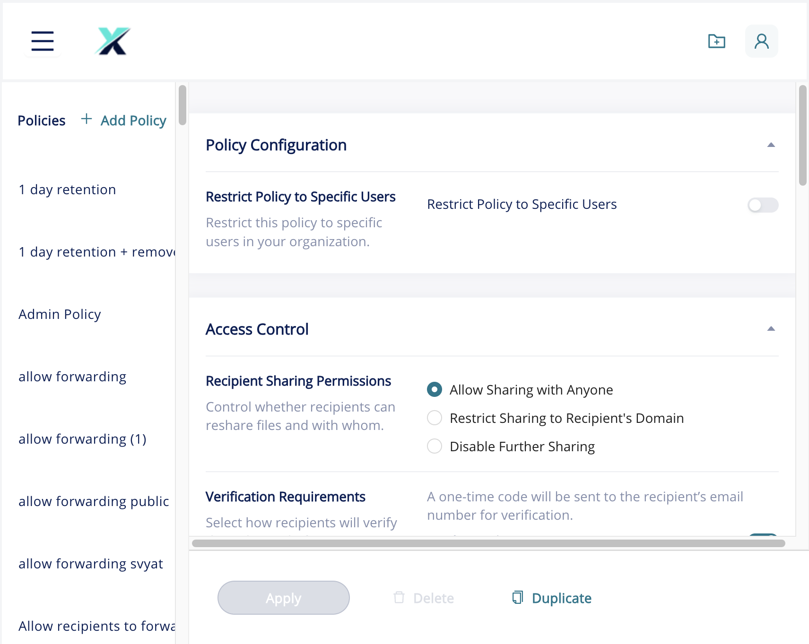
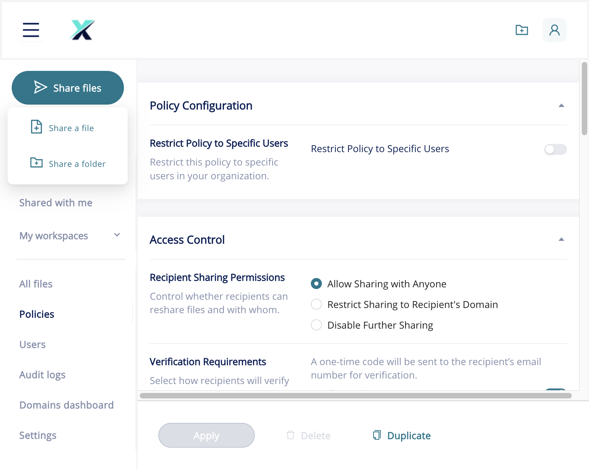
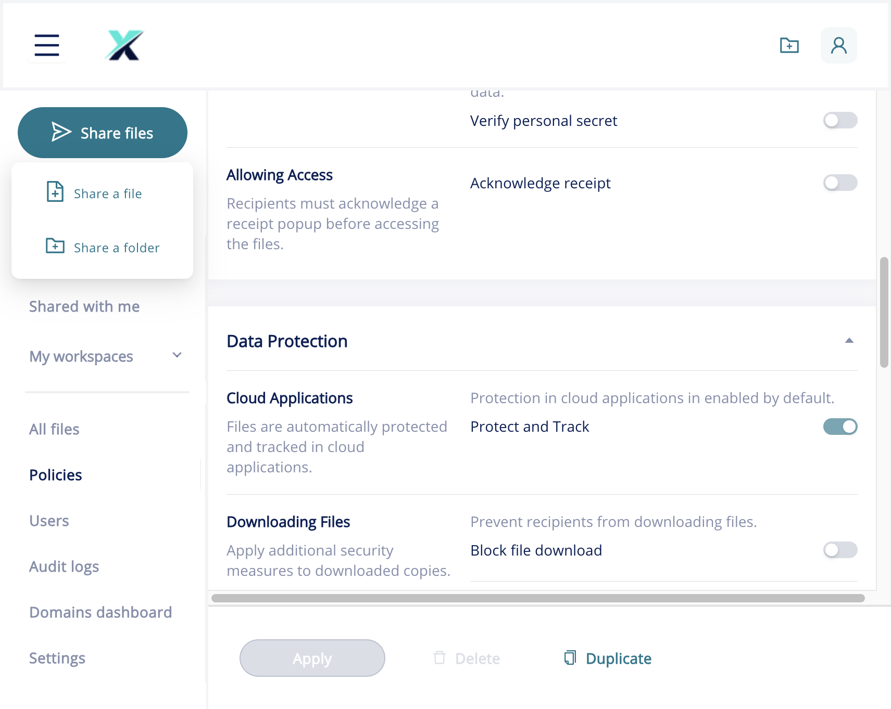
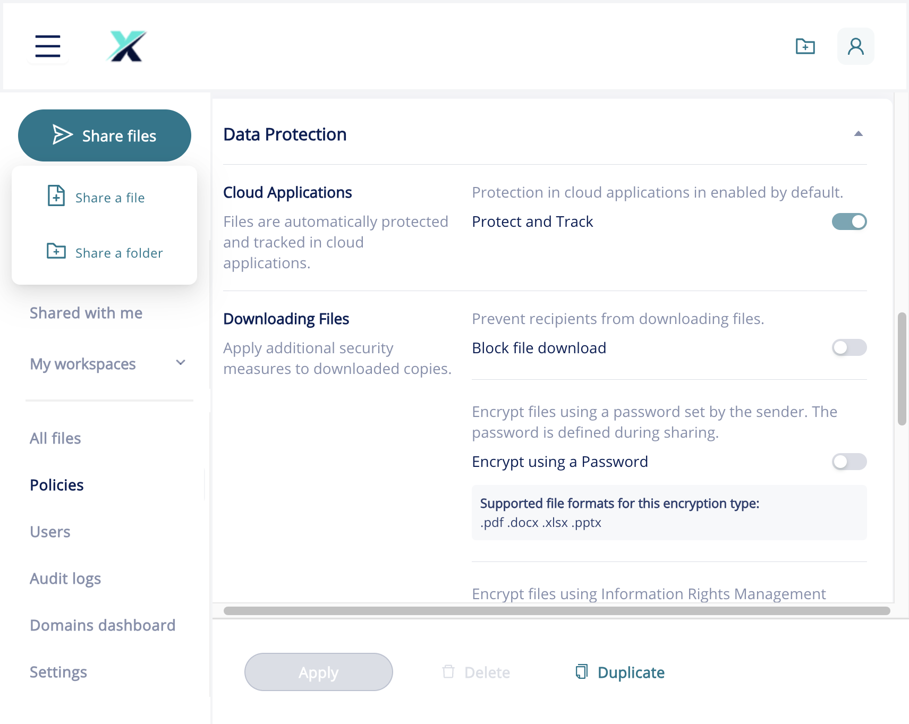

Configure a security policy
SpecterX security policies define how recipients can access, verify, download, and forward files you share with them. Every file in SpecterX is governed by a policy. This article shows you how to create a new policy and configure its three main sections: Policy Configuration, Access Control, and Data Protection.
Before you get started
- Permissions required. Administrator role. Only users with the Administrators role can create, edit, or delete policies. Collaborators can view the policy list and apply existing policies when sharing, but cannot modify them.
- Default policy. Every SpecterX tenant ships with a Default policy. You cannot delete the Default policy, but you can duplicate it and modify the copy.
- Policy changes take effect immediately. Updating a policy affects all files currently governed by that policy, including files that were already shared. Inform users before changing a policy that is widely in use.
- Limitations. Rights Management (RMS) encryption supports .pdf, .docx, .xlsx, and .pptx files only. Watermarking is only visible when the file is opened in the SpecterX Viewer; downloaded copies that bypass the viewer will not carry the watermark unless RMS encryption is also enabled.
Open the Policies page
In the left navigation, click Policies. The Policies page opens at /policy-editor.
The left panel lists all existing policies alphabetically. The right panel shows the editor for the currently selected policy.

Create a new policy
At the top of the policy list, click + Add Policy.
A new untitled policy appears in the list and is immediately selected. The editor on the right shows all settings at their defaults.
At the top of the editor panel, type a descriptive name for your policy. Use a name that clearly communicates the data sensitivity or use case, for example HIPAA — PHI Restricted or Partner NDA — View Only.
Configure Policy Configuration
The Policy Configuration section controls who in your organization can apply this policy when sharing files.
Click Policy Configuration to expand the section (it is expanded by default).

If you want only specific users in your organization to be able to apply this policy when sharing files, enable the Restrict Policy to Specific Users toggle, then select the users or groups from the picker that appears.
Leave this toggle off if the policy should be available to all Collaborators and Administrators.
Configure Access Control
The Access Control section governs how recipients can share and verify their identity when accessing your files.
Recipient Sharing Permissions
Under Recipient Sharing Permissions, choose how recipients may forward or reshare your files:
- Allow Sharing with Anyone — recipients can forward the protected link to any email address.
- Restrict Sharing to Recipient's Domain — recipients can only forward within their own email domain (e.g.
@acme.com). Useful for partner-sharing scenarios. - Disable Further Sharing — recipients cannot forward the file at all. The sharing button in the SpecterX Viewer is hidden. Recommended for highly sensitive documents.
Verification Requirements
Under Verification Requirements, choose how recipients must prove their identity before accessing the file. Enable one or more verification methods:
- Email verification — SpecterX sends a one-time code to the recipient's email address. The recipient must enter the code to open the file. This is the most common method for external sharing.
- Phone (SMS/call) verification — SpecterX sends a one-time code by SMS or phone call to a mobile number you specify at share time. Adds a strong second factor for highly sensitive data.
- Verify personal secret — the sender defines a password during the share flow; the recipient must enter it before accessing the file.
Allowing Access
Enable Acknowledge receipt if you want recipients to confirm that they are the intended recipient before the file opens. A popup appears to the recipient asking them to confirm their name and purpose of access.

Configure Data Protection
The Data Protection section controls how files are protected at rest and in use — both in the SpecterX cloud and when downloaded to the recipient's device.

Cloud Applications
Protect and Track is enabled by default and cannot be disabled. This setting ensures that all access to the file through the SpecterX Viewer is tracked in the audit log.
Downloading files
Enable Block file download to prevent recipients from downloading any copy of the file. Recipients can view the file online in the SpecterX Viewer but the download button is hidden. This is the strictest download control — enable it for your most sensitive documents.
Enable Encrypt using a Password to require that downloaded copies are protected by a password the sender sets at share time.
Supported file formats for password encryption: .pdf, .docx, .xlsx, .pptx.
Enable Encrypt using Information Rights Management (RMS) to apply Microsoft Rights Management Service encryption to downloaded copies. RMS encryption is enforced at the file level, ensuring the file remains protected even if it is copied to another location or forwarded outside SpecterX.
RMS encryption requires that your tenant has an active Microsoft Azure RMS or Entra ID configuration. Contact your administrator if this toggle is not available.
Enable Watermark to add a dynamic visible watermark to the file in the SpecterX Viewer. The watermark text typically includes the recipient's email address and access timestamp, creating a traceable record that can identify unauthorized distribution.
Watermark text and position can be customized by your administrator.
Set the Recipient Experience language
Click Recipient Experience to expand the section.
Select the language in which the SpecterX Recipient Page and verification prompts are displayed to recipients. Currently supported options are English and Hebrew.
Choose the language that your recipients use. For a mixed audience, create one policy per language.
Save and apply the policy
After configuring all sections, click Apply at the bottom of the editor panel.
The policy is saved and becomes available in the policy dropdown when sharing files.
To delete a policy you no longer need, select it in the policy list and click Delete. You cannot delete the Default policy.
Policy examples
| Use case | Recommended settings |
|---|---|
| Standard internal share Sharing reports with colleagues |
Allow Sharing with Anyone · Email verification · Protect and Track on · Download allowed |
| External partner NDA file Contract or legal document |
Restrict Sharing to Recipient's Domain · Email verification · Watermark on · Block file download |
| Highly sensitive / regulated data PHI, PII, financial data |
Disable Further Sharing · Phone verification · Watermark on · Encrypt using RMS · Block file download |
| Board package / confidential presentation Internal board members only |
Restrict Policy to Specific Users (board members group) · Disable Further Sharing · Email + Phone verification · Encrypt using RMS |